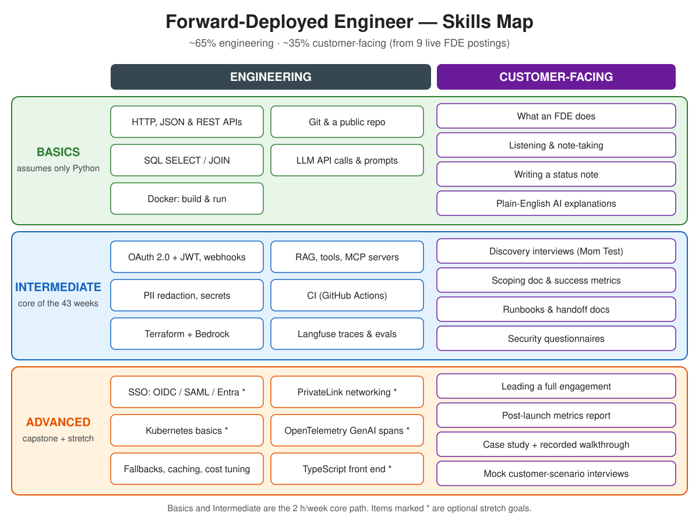
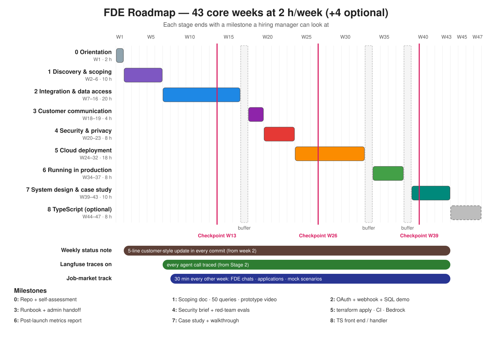

For: Yeshwanth · Pace: 2 hours/week (≈1 h learn + 1 h build) · Maths: none beyond high-level intuition
Length: 43 core weeks (~86 h, ~10 months), plus an optional 4-week TypeScript stage (47 weeks total)
Built by: Researcher → Curriculum → Critic + Outsider → Judge · Date: 4 Oct 2026
Upgraded 4 Oct 2026: every stage now has Basics → Intermediate → Advanced tiers with plain-language explanations, free links, timestamped YouTube segments and optional paid courses. Diagrams are below and in assets/. The 2 h/week pace, the 43-week timeline, and every milestone are unchanged.
Visual overview


Roadmap flow (stages and dependencies)
flowchart LR
PRE["Prerequisite:<br/>AI Engineer Roadmap core<br/>(Python, LLM APIs, RAG, agents, MCP)"] --> S0
S0["Stage 0<br/>Orientation<br/>W1"] --> S1["Stage 1<br/>Discovery and scoping<br/>W2-6"]
S1 --> S2["Stage 2<br/>Integration and data access<br/>W7-16"]
S2 --> B1(["Buffer W17"])
B1 --> S3["Stage 3<br/>Customer communication<br/>W18-19"]
S3 --> S4["Stage 4<br/>Security and privacy<br/>W20-23"]
S4 --> S5["Stage 5<br/>Cloud deployment<br/>W24-32"]
S5 --> B2(["Buffer W33"])
B2 --> S6["Stage 6<br/>Running in production<br/>W34-37"]
S6 --> B3(["Buffer W38"])
B3 --> S7["Stage 7<br/>System design and case study<br/>W39-43"]
S7 -.->|optional| S8["Stage 8<br/>TypeScript<br/>W44-47"]
S1 -.->|50-query eval set| S4
S1 -.->|50-query eval set| S6
S2 -.->|Langfuse traces| S6
S1 -.->|scoping doc| S7
classDef core fill:#E3F2FD,stroke:#1565C0,color:#0D47A1
classDef buf fill:#F5F5F5,stroke:#9E9E9E,color:#424242
classDef opt fill:#FFF3E0,stroke:#E65100,color:#BF360C,stroke-dasharray: 5 5
class S0,S1,S2,S3,S4,S5,S6,S7 core
class B1,B2,B3 buf
class S8,PRE optTimeline (Gantt, 2 h/week)
Dates assume you start on Monday 5 Oct 2026; shift them to your real start date. One bar = one stage; the Checkpoints row marks the quarterly checkpoints.
gantt
title FDE roadmap - 43 core weeks at 2 h per week
dateFormat YYYY-MM-DD
axisFormat %d %b
todayMarker off
section Core stages
S0 Orientation :s0, 2026-10-05, 7d
S1 Discovery and scoping :s1, after s0, 35d
S2 Integration and data access :s2, after s1, 70d
Buffer W17 :b1, after s2, 7d
S3 Customer communication :s3, after b1, 14d
S4 Security and privacy :s4, after s3, 28d
S5 Cloud deployment :s5, after s4, 63d
Buffer W33 :b2, after s5, 7d
S6 Running in production :s6, after b2, 28d
Buffer W38 :b3, after s6, 7d
S7 System design and case study :s7, after b3, 35d
section Optional
S8 TypeScript :s8, after s7, 28d
section Habits
Weekly status note :h1, 2026-10-12, 294d
Langfuse traces on :h2, 2026-11-16, 259d
Job-market track :h3, 2026-11-23, 252d
section Checkpoints
Checkpoint W13 :milestone, c1, 2027-01-03, 0d
Checkpoint W26 :milestone, c2, 2027-04-04, 0d
Checkpoint W39 :milestone, c3, 2027-07-04, 0dHow to use this roadmap (tiers, videos and paid courses)
- Three tiers per stage. Basics assumes nothing beyond Python. Intermediate is the core that the stage's milestone needs. Advanced (optional / stretch) is extra depth, not required for the milestone.
- Keeping it at 2 h/week: Basics and Intermediate fit inside each stage's existing "Learn" hours. If you already know a Basics item from your AI Engineer Roadmap, skip it. Do Advanced items only in a buffer week (17, 33, 38), after week 43, or when a quarterly checkpoint says your target roles need them.
- Every concept has at least one of: a short explanation written here, a free link, a timestamped video segment, or an optional paid course module.
- Videos: a segment like "watch 3:00–12:00" means start at the first time and stop at the second. The link already jumps to the start. Every timestamp comes from the video's own chapter markers (checked 4 Oct 2026). Videos without chapters are labelled full video. Treat videos as a substitute for the matching reading, not an extra: watch or read, then build.
- Paid courses (optional, never required): listed per stage under "Optional paid alternatives" and in one table near the end. Prices are as shown on each page on 4 Oct 2026 and can change. "Price varies" means the page doesn't show a fixed price (subscription, regional pricing or frequent sales). Prefer the free path; buy only if you learn much better from structured courses.
What this plan is
An FDE works directly with a customer to scope, build, integrate, secure, deploy and run an AI system inside their environment. In 9 live postings (OpenAI, Anthropic, Palantir, Scale AI, Sierra, Decagon, Cohere, Mistral, Databricks) the work was roughly 60–70% engineering and 30–40% customer-facing. Skill frequency (out of 9): customer delivery 9, integration 8, scoping ~8, production LLM/agent/RAG 7, evals 7, communication 6, security 5, cloud 4, observability 4, fine-tuning 1.
This is a job-entry plan, not a course. Everything runs through one engagement with a real customer (a friend's small business, a nonprofit, or a team at your current job). Fallback if you can't find one: a fictional "Customer Zero" support team that wants an agent over its Google Drive docs and ticket inbox. Every week ends with a commit to one public repo, fde-customer-zero, so a hiring manager sees one end-to-end deployment from discovery to post-launch.
Customer privacy rule: never put a real customer's data, documents, ticket text or names in the public repo, and get their written OK before publishing anything about them. Run the real engagement in a private repo and publish a cleaned-up version to fde-customer-zero for your portfolio.
Starting assumption: you've finished (or are close to finishing) the core of your AI Engineer Roadmap: Python, Git, LLM APIs, tool calling, RAG, agents, MCP, evals and FastAPI. If you're still early in it, finish it first and run only the weekly habits below alongside. Two hours a week split across two full tracks stalls both.
Realistic entry route: most FDE roles ask for 4–5+ years of experience. Aim the milestones first at stepping-stone roles: Palantir's junior/new-grad FDSE, deployment, implementation or solutions engineer at AI app startups (e.g. Sierra, Decagon), and solutions engineering at AI platforms.
AI, ML and LLMs in plain English (primer, no maths)
Read this once before Stage 0. It's the vocabulary you'll use with customers. Explaining these simply is part of the job.
| Concept | Plain-English explanation | Why an FDE needs it |
|---|---|---|
| AI vs ML vs deep learning | AI is any software that does tasks we'd call "smart". Machine learning (ML) is AI that learns patterns from examples instead of hand-written rules. Deep learning is ML built from large "neural networks", layers of simple units that together recognise complex patterns. | Customers mix these words up. You need to say which one their problem actually needs. |
| Training vs inference | Training is the expensive one-off process where a model learns from data. Inference is using the finished model to answer a request. As an FDE you almost always do inference, not training. | Sets expectations: you're integrating a model, not building one, which is cheaper and faster. |
| Large language model (LLM) | A deep-learning model trained on huge amounts of text to predict the next word (token). Prediction at that scale lets it write, summarise, reason and follow instructions. | It's the engine inside nearly every system you'll deploy. |
| Tokens and context window | Models read and write in tokens (word pieces, roughly ¾ of a word). The context window is how many tokens fit into one request: instructions, documents and conversation together. | Cost, speed and how much customer data you can send at once all depend on tokens. |
| Prompt and system prompt | The prompt is the text you send. The system prompt is standing instructions that set the model's role and rules. | Most behaviour fixes in a deployment start as prompt changes. |
| Pre-training, fine-tuning, RLHF | Pre-training teaches general language. Fine-tuning adjusts a model on narrower examples. RLHF (reinforcement learning from human feedback) tunes it towards answers people prefer. Only 1 of 9 FDE postings asked for fine-tuning. | When customers ask "can we train it on our data?", the honest answer is usually RAG first, not fine-tuning. |
| Hallucination | When a model states something false with confidence, because it's predicting plausible text, not looking facts up. | The #1 customer worry. Grounding (RAG), evals and citations are your answers. |
| Embeddings and vector store | An embedding turns text into a list of numbers so that similar meanings land close together. A vector store (e.g. pgvector, Chroma) finds the closest chunks quickly. | This is how an agent finds the right paragraph in a customer's 10,000 documents. |
| RAG (retrieval-augmented generation) | Before answering, the system retrieves relevant chunks of the customer's documents and puts them in the prompt, so the model answers from their data. | The most common enterprise pattern. Most "chat with our docs" projects are RAG. |
| Tool calling and agents | Tool calling lets a model ask your code to run a function (search tickets, look up an order). An agent is a loop where the model decides which tools to call, step by step, until the task is done. | Agents are how AI touches real systems, so they're where integration and security work happens. |
| MCP (Model Context Protocol) | An open standard for plugging tools and data sources into AI apps, like a USB port for AI. You write an MCP server once and any MCP-aware client can use it. | Increasingly how customers expect integrations to be packaged. |
| Evals | Automated tests for AI output: a set of realistic inputs plus a way to judge if each answer is good (code checks, human labels, or another LLM as judge). | Without evals you can't prove to a customer that a change made things better. |
| Guardrails | Checks around the model: filtering inputs (prompt injection, PII) and outputs (unsafe or off-topic answers). | Security and compliance teams will ask about them. |
Free resources (Basics → Advanced):
- Basics: Google: Intro to Machine Learning (conceptual, ~1 h; skip any maths).
- Basics video: But what is a neural network? — 3Blue1Brown, watch 2:42–8:38 for neurons and layers (stop before the notation section).
- Basics video: Large Language Models explained briefly — 3Blue1Brown, watch 0:35–4:15 for what an LLM is, training, and pre-training vs RLHF.
- Intermediate video: [1hr Talk] Intro to Large Language Models — Andrej Karpathy, watch 0:20–8:58 for inference and training, then 14:14–17:52 for fine-tuning into an assistant, and 27:43–33:32 for tool use.
- Intermediate video: What is Retrieval-Augmented Generation (RAG)? — IBM Technology, watch 1:22–6:35 for the two problems RAG solves and how it helps.
- Intermediate video: How Model Context Protocol (MCP) actually works — Google Cloud Tech, watch 0:48–6:43 for MCP clients, servers, tools and resources, and how MCP differs from an API.
- Intermediate reading: What is RAG? (AWS), OpenAI embeddings guide, OpenAI function calling guide, MCP introduction, Anthropic prompt engineering overview.
- Advanced (optional): The Illustrated Transformer (pictures, not equations). Large Language Models explained briefly — 3Blue1Brown, watch 4:42–7:05 for transformers and attention. Deep Dive into LLMs like ChatGPT — Andrej Karpathy, watch 7:47–14:27 for tokenization and 1:20:32–1:41:46 for hallucinations, tool use and working memory. Hugging Face LLM course, chapter 1.
- Optional paid (Basics): Generative AI for Everyone (DeepLearning.AI on Coursera). Module "Introduction to Generative AI" (Week 1) maps to this primer. Price varies (see the paid table).
Big-picture diagrams
The FDE customer-engagement lifecycle
Each stage of this roadmap trains one step of a real engagement. Your fde-customer-zero repo should show all eight.
flowchart LR
D["1. Discovery<br/>interviews, workflow,<br/>50 real queries<br/>(Stage 1)"] --> S["2. Scope<br/>scoping doc, success<br/>metrics, out of scope<br/>(Stage 1)"]
S --> P["3. Prototype<br/>1-hour throwaway demo<br/>(Stage 1)"]
P --> I["4. Integrate<br/>OAuth, webhooks, SQL,<br/>SaaS APIs<br/>(Stage 2)"]
I --> SEC["5. Secure<br/>PII, secrets, prompt<br/>injection, questionnaire<br/>(Stage 4)"]
SEC --> DEP["6. Deploy<br/>Docker, CI, Terraform,<br/>customer-cloud models<br/>(Stage 5)"]
DEP --> OP["7. Operate<br/>traces, evals, cost,<br/>latency, fallbacks<br/>(Stage 6)"]
OP --> CS["8. Case study<br/>write-up + walkthrough<br/>(Stage 7)"]
OP -.->|new failure modes feed the next iteration| S
COMMS["Communication throughout:<br/>weekly status notes, runbook,<br/>handoff README (Stage 3 + habits)"] -.-> S
COMMS -.-> OPReference architecture: a typical enterprise LLM / RAG / agent deployment
This is the shape of what you'll build by Stage 5, and what you'll redraw for the Stage 5 README and the Stage 7 case study.
flowchart TB
subgraph Users["Customer users"]
U1["Web chat / Slack / Teams"]
U2["Ticketing system<br/>(webhook events)"]
end
subgraph Identity["Identity"]
IDP["Customer IdP<br/>(Google, Entra ID, Okta)<br/>OAuth 2.0 / OIDC / SAML"]
end
subgraph App["Your deployment (customer's cloud account)"]
GW["API gateway / load balancer<br/>TLS, rate limits"]
API["FastAPI service<br/>(Docker container)"]
AG["Agent orchestrator<br/>tool calling, MCP clients"]
GR["Guardrails<br/>PII redaction (Presidio),<br/>prompt-injection checks"]
LLMGW["LLM gateway<br/>(LiteLLM): routing,<br/>fallbacks, cost tracking"]
RET["Retriever"]
VS[("Vector store<br/>pgvector / Chroma")]
ING["Ingestion job<br/>chunk + embed docs"]
SEC["Secrets manager"]
end
subgraph Models["Models inside the customer's cloud"]
M1["Amazon Bedrock"]
M2["Azure OpenAI"]
M3["Vertex AI"]
end
subgraph Systems["Customer systems of record"]
DOCS["Docs: Google Drive /<br/>SharePoint"]
DB[("Ticket / CRM database<br/>(SQL)")]
SAAS["SaaS APIs<br/>(Workspace, Graph, Salesforce)"]
end
subgraph Obs["Observability"]
LF["Langfuse traces + evals"]
OT["OpenTelemetry / logs,<br/>p50/p95 latency, cost"]
end
subgraph Ops["Delivery"]
CI["GitHub Actions CI"]
TF["Terraform (infra as code)"]
end
U1 --> GW
U2 -->|webhook| GW
U1 -.->|sign in| IDP
IDP -.->|tokens| GW
GW --> API --> AG
AG --> GR --> LLMGW
LLMGW --> M1 & M2 & M3
AG --> RET --> VS
ING --> VS
DOCS --> ING
AG -->|per-user OAuth| SAAS
AG -->|read-only SQL| DB
SAAS --- DOCS
API -.-> SEC
AG -.-> LF
LLMGW -.-> LF
API -.-> OT
CI --> TF --> AppFree references for the architecture (Intermediate → Advanced): Chip Huyen: Building a GenAI Platform (also in Stage 7), Azure RAG solution design and evaluation guide, LiteLLM proxy (LLM gateway), Eugene Yan: Patterns for building LLM-based systems, and How to Build a Scalable RAG System for AI Apps — ByteMonk, watch 4:45–13:15 for production RAG architecture, chunking, vector + relational databases and hybrid search (Advanced, optional).
Weekly habits (run across the whole plan, about 10–15 min, inside the 2 h)
- Status note: from week 2, every commit includes a 5-line customer-style status update (done / next / blockers / risks / ask). That's about 40 real examples by the end.
- Traces on: from Stage 2, all agent calls go through Langfuse, so you'll have months of real traces by Stage 6.
- Job-market track (from week 8, 30 min every other week, instead of building that week): alternate between an informational chat with a working FDE or solutions engineer (LinkedIn or the PreSales Collective community), an application to a stepping-stone role, and a mock "customer scenario" interview: break down a vague customer request into scope, risks and a plan, out loud, for 20 minutes.
Quarterly checkpoints (end of weeks 13, 26, 39)
Spend one session re-checking 5+ current FDE, deployment-engineer and solutions-engineer postings, including India-based and remote-from-India roles. Check what you heard in your FDE chats, and whether any spec or tool has changed (MCP auth, cloud AI services). Then reorder or cut the remaining stages. This plan is a starting point, not a contract.
Stage 0 — Orientation (week 1 · 2 h)
- Read: Pragmatic Engineer: Forward Deployed Engineers, Palantir: a day in the life of an FDSE, and two postings: OpenAI FDE and Palantir FDSE New Grad.
- Do: start finding your real customer.
- Milestone: a public repo
fde-customer-zerowith a README holding a one-page self-assessment against the skill list above, and the name of your customer (or "fictional fallback").
Stage 0 by level
Time: fits in the week's 2 h. Advanced is optional.
Basics
- What an FDE is. A forward-deployed engineer is a software engineer who works inside a customer's world: they sit with users, find the real problem, and ship a working system into the customer's own environment. It's part engineer, part consultant, part product manager. Knowing this tells you what to practise: delivery, not research.
- Video: What is a Forward Deployed Engineer (FDE)? — Caleb Curry, watch 0:22–2:38 for what forward-deployed engineering is.
- How to read a job posting. Split each posting into "engineering" and "customer" requirements and mark which you can already show evidence for. That's the self-assessment for your milestone. The two postings linked above are your templates.
Intermediate
- The FDE skill stack and how to learn it. Customer delivery, integration, production LLM systems, evals, communication, security and cloud, roughly in that order of frequency (see the counts above).
- Video: How to Become a Forward Deployed Engineer in 2026 — Tech With Tim, watch 3:16–7:01 for the skill stack and how to learn it.
- Video: What is a Forward Deployed Engineer (FDE)? — Caleb Curry, watch 9:24–11:16 for how to prepare and why to deploy your own software.
- Finding a real customer. Ask small businesses, nonprofits, or a team at work: "What's one repetitive question your team answers every week?" A real customer gives you real interviews and real feedback. Keep the privacy rule above in mind from day one.
Advanced (optional / stretch)
- The FDE interview. Interviews often include a decomposition or customer-scenario round. Start noticing what they test now; the job-market track practises it from week 8.
- Video: How to Become a Forward Deployed Engineer in 2026 — Tech With Tim, watch 9:25–11:34 for the fast path and what to expect in the interview.
Optional paid alternative: Generative AI for Everyone (Coursera), module "Generative AI in Business and Society" (Week 3) for business context. Price varies.
Stage 1 — Discovery, scoping & first prototype (weeks 2–6 · 10 h)
- Learn: The Mom Test, about $10 and 3 h. It's the one paid item in the core plan, and the best single resource for the most-requested skill. Also Design Docs at Google (0.5 h), and optionally Shape Up, chapters 1–6 (2 h).
- Warm-up: SQLBolt (3 h, spread across the stage), so SQL is ready before Stage 2.
- Do: interview your customer plus at least one other person about the workflow. From the interviews, write ~50 realistic user queries. This becomes your eval set and your test traffic for the rest of the plan.
- Build: a 1-hour throwaway prototype of the agent, using what your existing roadmap taught you, run against a few sample docs.
- Milestone: interview notes, the 50-query set, a 2-page scoping doc (problem, success metrics, out of scope, risks, data access needs, timeline), and a 2-minute screen recording of the prototype.
Stage 1 by level
Time: Basics and Intermediate fit in the stage's 10 h (The Mom Test 3 h + SQLBolt 3 h + interviews/build). Advanced is optional.
Basics
- Customer discovery interview. A conversation to learn how someone actually works today and where it hurts, before you build anything. The trick is to ask about past behaviour ("Walk me through the last time a ticket took too long") instead of opinions about your idea ("Would you use an AI bot?"), because people are polite and will say yes to anything. → The Mom Test (core).
- Video: Start-up advice & How to talk to customers with Rob Fitzpatrick (The Mom Test) — Digital Product School, watch 17:36–23:15 for customer development (the author's own talk).
- Databases and tables. A relational database stores data in tables (rows and columns), like spreadsheets that can reference each other. Almost every customer's important data (tickets, orders, users) lives in one, so you'll query it in Stage 2.
- Video: SQL Tutorial - Full Database Course for Beginners — freeCodeCamp.org, watch 2:36–23:10 for what a database is.
- SQL SELECT and WHERE.
SELECTpicks columns,FROMpicks the table, andWHEREfilters rows. Those three cover most lookups an agent tool needs. → SQLBolt lessons 1–5.- Video: SQL Course for Beginners [Full Course] — Programming with Mosh, watch 23:40–43:35 for SELECT, the SELECT clause and WHERE.
Intermediate
- Turning interviews into a query set. Write each real question you heard, in the user's words, as one line of a CSV with the answer you'd expect. These ~50 queries become your eval set (Stage 4 and 6) and your test traffic, so the whole project is anchored on real needs.
- Scoping doc. A short document that names the problem, how success will be measured (e.g. "70% of tier-1 tickets answered correctly"), what's out of scope, risks, data access needed and a timeline. Customers sign off on it, and it protects you from endless scope creep. → Design Docs at Google; optional Shape Up for "appetite" (fixed time, variable scope).
- Throwaway prototype. A deliberately rough demo built in an hour to check you understood the problem, not to keep. Showing something by week 6 builds trust and surfaces misunderstandings early.
- Video: AI Engineering with Chip Huyen — The Pragmatic Engineer, watch 18:15–24:38 for simple first steps in building AI applications.
- SQL JOINs. A JOIN combines rows from two tables that share a key (e.g. tickets and customers by
customer_id). You'll need it for any "show me this customer's open tickets" tool. → SQLBolt lessons 6–7.- Video: SQL Course for Beginners [Full Course] — Programming with Mosh, watch 1:24:50–1:33:16 for inner joins.
Advanced (optional / stretch)
- Picking the right first use case. Prefer narrow, high-volume, low-risk workflows (e.g. drafting support replies for human review) over "replace the whole team". It's the difference between a pilot that ships and one that stalls.
- Video: AI Engineering with Chip Huyen — The Pragmatic Engineer, watch 29:40–35:29 for rolling out AI customer-support solutions thoughtfully.
- Diagrams as code. Draw your workflow and architecture in Mermaid so they live in the repo, like the diagrams in this file. → Mermaid intro, GitHub: creating diagrams.
Optional paid alternative: Generative AI for Everyone (Coursera), module "Generative AI Projects" (Week 2) for scoping AI projects. Price varies.
Stage 2 — Enterprise integration & data access (weeks 7–16 · 20 h)
- Learn (~7 h):
- OAuth 2.0 Simplified (2 h) and JWT intro
- MCP authorization spec (1 h)
- Webhooks explained
- A 20-minute skim only of OIDC, SAML and the Microsoft Entra auth-code flow, so you recognise them in customer conversations
- Pick one SaaS API to go deep on: Google Workspace APIs by default, since a personal account is free. Alternatives are Microsoft Graph or Salesforce API Basics.
- Two gotchas to know up front:
- Google OAuth in Testing mode: leave your Google Cloud app in "Testing" and add yourself and your customer as test users. Refresh tokens for apps in Testing expire after 7 days (see Google's OAuth docs), and Drive scopes are sensitive. Build re-consent handling and don't plan on getting the app verified.
- Webhooks need a public URL before you deploy: use ngrok or a free Cloudflare quick tunnel.
- Build (~13 h):
- per-user OAuth access to Drive, including token refresh and re-consent
- a webhook endpoint that takes in new tickets
- a SQL lookup against a small ticket database
- Langfuse tracing switched on (see Stage 6 for the docs)
- Milestone: a 3-minute demo video showing a user logging in, getting an answer only that user is allowed to see, and a new ticket triggering the agent. Your 50 queries should run end to end.
- Week 17: catch-up buffer.
Stage 2 by level
Time: Basics and Intermediate fit in the ~7 h "Learn" budget; skip Basics you already know. Advanced is optional (week 17 buffer or later).
Basics
- HTTP, JSON and REST APIs. Programs talk over the web by sending HTTP requests (GET to read, POST to create) to URLs and getting responses with a status code (200 OK, 401 unauthorised, 404 not found) and usually a JSON body. A REST API is a set of such URLs for one system. Every integration you build is HTTP calls, so reading status codes and JSON is the first debugging skill. → MDN: HTTP overview, MDN: HTTP status codes, MDN: REST.
- Calling APIs from Python. The
requestsorhttpxlibrary sends HTTP calls in a couple of lines. Practise one GET against a public API before touching OAuth. → Requests quickstart, HTTPX. - Building an API with FastAPI. FastAPI turns Python functions into HTTP endpoints, with automatic validation (via Pydantic) and docs. It's the backend for your agent and your webhook. → FastAPI tutorial, Pydantic.
- Authentication vs authorisation. Authentication = proving who you are (logging in). Authorisation = what you're allowed to do or see. Your milestone ("an answer only that user is allowed to see") is an authorisation problem.
- Video: JWT Explained In Under 10 Minutes (JSON Web Tokens) — Ariel Weinberger, watch 0:21–5:49 for authentication vs authorisation, JWT structure, signatures, and why JWTs are encoded, not encrypted.
- OAuth 2.0 in one sentence. OAuth lets a user give your app limited access to their account on another service (e.g. "read my Drive files") without giving you their password. The app gets an access token with specific scopes.
- Video: OAuth 2 Explained In Simple Terms — ByteByteGo (full video, 4:32).
- Video: An Illustrated Guide to OAuth and OpenID Connect — OktaDev, watch 4:12–10:57 for the OAuth flow with an example.
- Webhooks. Instead of your code asking "anything new?" every minute (polling), the other system calls your URL the moment something happens (a new ticket). That's why your laptop needs a public URL (ngrok or a tunnel) during development. → Webhooks explained.
- Video: Top 3 Things You Should Know About Webhooks! — ByteByteGo, watch 0:42–3:11 for polling vs webhooks, how they work, and best practices.
- SQL from Python. Python's built-in
sqlite3module runs SQL against a file database with no server, perfect for your small ticket DB. → sqlite3 docs.
Intermediate
- Authorization-code flow, scopes and consent. The standard flow for server apps: the user is redirected to Google, approves the scopes, Google redirects back with a short-lived code, and your server swaps it for access and refresh tokens. You must store tokens per user and request the narrowest scopes. → OAuth 2.0 Simplified, authorization code flow, Google's OAuth docs.
- Video: OAuth 2.0 and OpenID Connect (in plain English) — OktaDev, watch 9:22–18:55 for the delegated-authorisation problem and OAuth high-level view, then 18:55–26:43 for the authorization-code flow, scopes and consent.
- Access tokens, refresh tokens and JWTs. Access tokens expire quickly; a refresh token gets a new one without bothering the user, until it's revoked or expires (7 days in Google "Testing" mode, see the gotcha above). A JWT is a signed token format you can decode to see who it's for and when it expires. → JWT intro.
- Video: JWT Explained In Under 10 Minutes — Ariel Weinberger, watch 5:49–8:13 for short-lived tokens and refresh-token rotation.
- Per-user data access (permission-aware retrieval). The agent must fetch documents with the asking user's token, so it can never show someone a file they couldn't open themselves. This is the single most important enterprise-integration rule. → OWASP Authorization Cheat Sheet.
- SaaS APIs (Google Workspace by default). Each vendor wraps its data in an API with its own auth, rate limits and pagination. Learning one deeply makes the next one quick. → Google Workspace APIs, Drive push notifications (Drive's own webhooks).
- Reliable webhook handling. Verify the sender's signature, respond fast (do slow work in the background), and make handlers idempotent, so a retried delivery doesn't create a duplicate. → Stripe webhooks guide (a clear vendor example of signatures, retries and idempotency).
- MCP servers and their auth. Wrap your Drive and ticket tools as an MCP server so any MCP client can use them. The MCP authorization spec builds on OAuth 2.1. → MCP authorization spec.
- Video: What is MCP? Integrate AI Agents with Databases & APIs — IBM Technology, watch 0:19–3:15 for MCP architecture and a practical workflow.
Advanced (optional / stretch)
- OpenID Connect, SAML and enterprise SSO. OIDC adds a standard ID token on top of OAuth so apps know who logged in. SAML is the older XML-based SSO that many large companies still run, and Entra ID is Microsoft's identity platform. You only need to recognise these in customer calls (the 20-minute skim above).
- Video: OAuth 2.0 and OpenID Connect (in plain English) — OktaDev, watch 49:08–55:36 for OpenID Connect, ID tokens and JWTs.
- PKCE. An extra step in the auth-code flow that stops a stolen code being used. It's required for public clients and recommended everywhere in OAuth 2.1. → PKCE (oauth.net).
- A second SaaS API. Repeat the Drive integration against Microsoft Graph or Salesforce to prove the pattern transfers.
- API integration patterns. Pagination, rate limits and backoff, and error handling. → Real Python: Python and REST APIs.
Optional paid alternative (Advanced): IBM RAG and Agentic AI Professional Certificate (Coursera). The page lists function calling, RAG, vector stores and Model Context Protocol among its skills, relevant to the agent side of this stage. It's a 10-course series marked "Advanced level". Price varies.
Stage 3 — Customer communication (weeks 18–19 · 4 h)
- Learn: Google Technical Writing One & Two (4 h, free).
- Milestone: a runbook ("what to do when the agent gives a wrong answer") and a handoff README for a non-technical admin. Your weekly status notes (see habits) cover the rest of this skill.
Stage 3 by level
Time: Basics and Intermediate fit in the stage's 4 h (Google Technical Writing). Advanced is optional.
Basics
- Writing for a non-technical reader. Lead with the outcome, use short sentences and plain words, and define any term the reader might not know. A customer admin who can't follow your README will call you instead, and every call costs trust. → Google Technical Writing One.
- Video: Technical Writing Course for Beginners — freeCodeCamp.org, watch 0:51–7:02 for what technical writing is.
- The weekly status note. Five lines: done / next / blockers / risks / ask. It's the most-used FDE writing format, because it lets a busy customer sponsor see progress in 30 seconds (already a habit from week 2).
Intermediate
- Runbooks. A step-by-step "if X happens, do Y" guide for someone on call, e.g. "the agent gave a wrong answer: 1) find the trace, 2) check the source doc, 3) ...". Good runbooks let the customer operate the system without you. → Google Technical Writing Two.
- Video: Technical Writing Course for Beginners — freeCodeCamp.org, watch 36:19–46:10 for writing user instructions and describing a process.
- Handoff README. What the system does, who owns it, how to log in, how to change common settings, and who to contact. It's written for the person who inherits the system.
Advanced (optional / stretch)
- Incident write-ups (postmortems). A blameless account of what broke, the impact, the cause and what will prevent it next time. Customers judge you as much on how you handle failures as on the launch. → Atlassian: incident postmortems.
- Formal reports and architecture diagrams for executives. The post-launch report (Stage 6) and case study (Stage 7) are formal reports. The C4 model gives a simple zoom-level vocabulary for system diagrams. → C4 model.
- Video: Technical Writing Course for Beginners — freeCodeCamp.org, watch 46:10–1:07:19 for formal report types and the main body.
Stage 4 — Security, privacy & compliance (weeks 20–23 · 8 h)
- Learn:
- OWASP Top 10 for LLM Applications (2 h)
- Simon Willison on prompt injection (1 h)
- Microsoft Presidio, hands-on PII redaction (1 h)
- OWASP Secrets Management Cheat Sheet
- Skim for awareness (~1 h):
- SOC 2 overview (vendor marketing content, but a clear explainer)
- EU data protection / GDPR
- India data protection framework (DPDP) (a government overview page, not the Act's full text)
- Build: redact PII before anything is sent to the LLM, move secrets out of the code, and add about 15 prompt-injection cases to your evals.
- Milestone: a one-page security brief answering a mock customer security questionnaire (data flow, where data lives, retention, PII handling), plus your red-team eval results.
Stage 4 by level
Time: Basics and Intermediate fit in the stage's 8 h. Advanced is optional.
Basics
- PII (personally identifiable information). Data that identifies a person: names, emails, phone numbers, ID numbers, addresses. Laws and customer contracts restrict where it can go, and sending it to a third-party model is often the first thing a security reviewer checks.
- Secrets. API keys, passwords and tokens. They must never be in code or Git history. Load them from environment variables or a secrets manager, and rotate any that leak. → OWASP Secrets Management Cheat Sheet.
- Prompt injection. Text that tricks the model into ignoring your instructions, typed by a user (direct) or hidden in a document or email the agent reads (indirect). It can't be fully prevented, only contained, so agents must have limited permissions. → Simon Willison on prompt injection.
- Video: What Is a Prompt Injection Attack? — IBM Technology, watch 0:15–6:52 for what prompt injection is, techniques, types and consequences.
- Least privilege. Give every token, service and agent tool only the access it needs. If the agent only needs to read tickets, it must not be able to delete them. This one principle limits the damage of most attacks.
Intermediate
- OWASP Top 10 for LLM applications. The industry checklist of LLM-specific risks: prompt injection, sensitive information disclosure, insecure output handling, excessive agency and more. Security teams use it as a shared vocabulary. → OWASP Top 10 for LLM Applications.
- Video: Explained: The OWASP Top 10 for Large Language Model Applications — IBM Technology, watch 1:25–8:55 for direct and indirect prompt injection and insecure output handling.
- Video: [1hr Talk] Intro to Large Language Models — Andrej Karpathy, watch 51:30–56:23 for prompt-injection examples.
- PII redaction before the model. Detect and mask PII (e.g. "Ravi" →
<PERSON>) before text leaves the customer boundary, and restore it afterwards if needed. → Microsoft Presidio.- Video: Presidio PII detection and anonymization demo — omri374ms (full video, 3:05; from a Presidio maintainer's channel).
- Prompt-injection defences and red-team evals. Separate trusted instructions from untrusted content, require confirmation for risky tool calls, filter outputs, and keep ~15 attack cases in your eval set so regressions show up.
- Video: What Is a Prompt Injection Attack? — IBM Technology, watch 6:52–10:57 for solutions and defences.
- Security questionnaires and data flow. Enterprises send long questionnaires: where does data go, where is it stored, for how long, who can access it, is it used for training? Answering them clearly is often what unblocks the deal. That's why your milestone is a one-page security brief.
Advanced (optional / stretch)
- Excessive agency and LLM application architecture. The risk that an agent with too many tools or permissions does real damage when it's tricked or wrong.
- Video: OWASP Top 10 for LLMs — OWASP Foundation, watch 5:44–9:01 for LLM application architecture, then 21:37–28:32 for excessive agency risks.
- Compliance frameworks (awareness only). SOC 2 is the audit US customers ask vendors for. GDPR is the EU privacy law, and DPDP is India's. You don't implement these; you recognise them and route questions to the right people. → SOC 2 overview (vendor content), GDPR, DPDP.
- AI risk management. → NIST AI Risk Management Framework (skim the overview), and the classic web risks in OWASP Top 10.
Optional paid alternative (Advanced): AI Evals For Engineers & PMs (Maven). The course page lists "Red-team for safety before users do" (prompt injection, jailbreaks, unsafe tool calls). It's also the Stage 6 pick; see the paid table for price.
Stage 5 — Deploying into the customer's cloud (weeks 24–32 · 18 h)
- Learn:
- Docker Get Started (3 h)
- GitHub Actions quickstart (1 h)
- Terraform: Get Started on AWS (2 h)
- Models inside the customer's cloud:
- Amazon Bedrock (1 h). Enable model access in your region early, since approval can take time.
- Skim Azure OpenAI and Vertex AI. Enterprises often must use the models their own cloud provides, and Azure is common with Indian enterprise clients.
- Optional: AWS Cloud Practitioner Essentials, AWS PrivateLink (concepts only), and Kubernetes Basics.
- Build in steps:
- Put the app in a container and run it locally.
- Deploy it to AWS with CI.
- Switch model calls to Bedrock.
- Codify everything in Terraform.
- Cost safety: AWS needs a card on file. Set a $5 budget alarm on day 1, and run
terraform destroyat the end of each week's build, not after every short session. - Milestone:
terraform applybrings the whole stack up from scratch, CI is green, and the README has an architecture diagram. - Week 33: catch-up buffer.
Stage 5 by level
Time: Basics and Intermediate fit in the stage's 18 h (Docker 3 h, Actions 1 h, Terraform 2 h, Bedrock 1 h, plus the build). Advanced is optional.
Basics
- Containers and Docker. A container packages your app with its exact Python version and libraries so it runs the same on your laptop and in the customer's cloud. An image is the recipe-built package; a container is a running copy of it. It's how almost every customer deployment is shipped. → Docker overview, Docker Get Started.
- Video: Docker Crash Course for Absolute Beginners [NEW] — TechWorld with Nana, watch 2:54–17:19 for what Docker is, the problems it solves, and VMs vs Docker, then 21:36–29:38 for images vs containers and registries.
- The cloud in plain terms. Renting computers, storage and managed services by the hour from AWS, Azure or Google. Enterprises run AI inside their own cloud account for security and billing reasons, so you deploy there.
- Config via environment. Keep settings and secrets in environment variables, not code, so the same image runs in dev and prod. This is one of the "twelve-factor" rules. → The Twelve-Factor App.
- Continuous integration (CI). A robot that runs your tests (and evals) on every push, so you find breakage before the customer does. → GitHub Actions quickstart.
- Video: How to use GitHub Actions | GitHub for Beginners — GitHub, watch 0:30–6:16 for what Actions are and building your first workflow.
- Cost safety. Cloud bills surprise people. Set a budget alarm before creating anything (the $5 rule above). → AWS Budgets.
Intermediate
- Writing a Dockerfile. A short file of steps: start from a Python base image, copy code, install requirements, set the start command. Build it, run it locally, then push it to a registry.
- Video: Docker Crash Course for Absolute Beginners [NEW] — TechWorld with Nana, watch 49:09–1:02:39 for writing a Dockerfile and building the image.
- CI/CD workflows. A YAML file in
.github/workflows/defines triggers, jobs and steps. Extend it to build and push your image (CD = continuous delivery).- Video: GitHub Actions Tutorial - Basic Concepts and CI/CD Pipeline with Docker — TechWorld with Nana, watch 13:04–20:40 for workflow syntax, then 24:35–32:30 for building a Docker image and pushing it to a private repo.
- Infrastructure as code (Terraform). You describe the cloud resources you want in files.
terraform applycreates them andterraform destroyremoves them. It makes a deployment repeatable for the next customer, and it's how you keep the bill near zero. → Terraform intro, Terraform: Get Started on AWS.- Video: Terraform explained in 15 mins — TechWorld with Nana, watch 0:30–3:22 for what Terraform is, 8:18–12:01 for how it works, and 15:23–18:15 for the basic commands.
- Video: Complete Terraform Course - From BEGINNER to PRO! — DevOps Directive, watch 28:32–58:23 for basic Terraform usage and the demo.
- Models inside the customer's cloud (Bedrock). Amazon Bedrock serves models from several vendors through one AWS API, so data stays in the customer's AWS account and on their bill. Azure OpenAI and Vertex AI are the Microsoft and Google equivalents. → Amazon Bedrock, Azure OpenAI, Vertex AI.
- Video: Amazon Bedrock for Beginners – From First Prompt to AI Agent (Full Tutorial) — AWS Developers, watch 1:01–5:21 for what Bedrock is, choosing a model, and system prompts, then 5:39–13:34 for the Converse API, boto3, and tokens and billing.
Advanced (optional / stretch)
- Tool use, knowledge bases and guardrails on Bedrock. Managed versions of what you built by hand. Useful when a customer prefers AWS-native services.
- Video: Amazon Bedrock for Beginners — AWS Developers, watch 14:19–21:06 for tool use, 21:06–30:18 for RAG and Bedrock Knowledge Bases, and 30:18–37:44 for guardrails.
- Terraform modules and multiple environments. Reusable building blocks, and separate dev and prod stacks from the same code.
- Video: Complete Terraform Course — DevOps Directive, watch 1:20:02–1:56:05 for project organisation, modules and managing multiple environments.
- Private image registries on AWS.
- Video: Docker Tutorial for Beginners [FULL COURSE in 3 Hours] — TechWorld with Nana, watch 2:04:36–2:19:06 for pushing an image to a private registry on AWS.
- Private networking, Kubernetes and the AWS basics. PrivateLink keeps traffic to model APIs off the public internet, which big customers often require. Kubernetes runs many containers at scale. → AWS PrivateLink, Kubernetes Basics, AWS Cloud Practitioner Essentials (all optional, as above).
Optional paid alternatives:
- Basics: AWS Cloud Technical Essentials (Coursera): "Week 1: AWS Overview and Security" (IAM), "Week 2: Compute & Networking", "Week 3: Storage & Databases on AWS". The page shows "Enroll for free"; a certificate needs a paid subscription (price varies).
- Intermediate: Docker & Kubernetes: The Practical Guide (Udemy, Academind): sections "Docker Images & Containers: The Core Building Blocks" (Dockerfile) and "Deploying Docker Containers" (cloud deploy). Price varies (not shown in the page source; Udemy prices change with sales).
- Intermediate: Ultimate AWS Certified Cloud Practitioner CLF-C02 (Udemy, Stephane Maarek): sections "IAM - Identity and Access Management" and "Other Compute Services: ECS, Lambda, Batch, Lightsail". Price varies.
Stage 6 — Running it in production (weeks 34–37 · 8 h)
- Learn:
- Langfuse docs (1.5 h)
- Hamel Husain: Your AI product needs evals (1 h)
- LiteLLM for fallbacks and cost tracking (1 h)
- OpenAI latency optimization and Anthropic prompt caching (1 h)
- Skim the OpenTelemetry GenAI conventions
- Build: error analysis on at least 50 traces (from your real customer, or the 50-query set replayed), a fallback model, and cost tracking.
- Milestone: a post-launch report with before-and-after numbers for p50/p95 latency, cost per query and eval pass rate, plus the top three failure types and how you fixed each.
- Week 38: catch-up buffer.
Stage 6 by level
Time: Basics and Intermediate fit in the stage's 8 h. Advanced is optional (week 38 buffer or later).
Basics
- Observability and traces. A trace records everything one request did: the prompt, retrieved chunks, each tool call, the model's answer, time taken and cost. When a customer says "it gave a weird answer yesterday", the trace is how you find out why. → Langfuse docs.
- Video: Langfuse Intro - Observability & Tracing Deep Dive — Langfuse, watch 1:04–4:42 for the demo, exploring trace data, and the data model.
- Latency, p50 and p95. Latency is how long a response takes. p50 is the typical (median) request, and p95 is the slow tail that 1 in 20 users hit. Customers feel p95, so your report shows both.
- Cost per query. Tokens in plus tokens out, times the model's price. Multiplied by daily volume, it becomes a number the customer's finance team will ask for.
- Monitoring basics. Watch a few "golden signals" (latency, traffic, errors, saturation) instead of everything. → Google SRE book: Monitoring distributed systems.
Intermediate
- Evals for your application (not benchmarks). Public leaderboards don't tell you whether this customer's agent works. Build pass/fail checks from real traces and your 50-query set, and rerun them after every change. → Hamel Husain: Your AI product needs evals.
- Video: LLM Evals: Common Mistakes — Hamel Husain, watch 0:51–4:00 for why benchmarks and generic evals don't measure your app, then 15:25–23:41 for binary labels and looking at your data.
- Error analysis. Read 50+ traces, note what went wrong in each, group the notes into failure types, and fix the biggest group first. It's the highest-value hour in AI engineering. → Hamel Husain: A field guide to rapidly improving AI products.
- Video: AI Evaluations Clearly Explained in 50 Minutes (Real Example) — Hamel Husain | Peter Yang, watch 1:25–9:50 for a live analysis of real production traces, then 9:50–24:44 for building eval criteria in a spreadsheet.
- Tracing and evaluating an agent in Langfuse.
- Video: Langfuse Walkthrough - Full Demo of Agent Tracing, Evals, Experiments and Prompt Management — Langfuse, watch 1:57–7:11 for tracing and evaluating an agent.
- Fallbacks and cost tracking via an LLM gateway. Route calls through one layer that retries on a backup model when the main one fails or is slow, and logs spend per request. → LiteLLM.
- Prompt caching and latency tricks. Providers can cache the repeated start of a prompt (system prompt, long documents), cutting cost and time to first token. Streaming, smaller models for easy steps, and fewer round trips help too. → OpenAI latency optimization, Anthropic prompt caching.
- Video: What is Prompt Caching? Optimize LLM Latency with AI Transformers — IBM Technology, watch 1:58–7:55 for how prompt caching works, what can be cached, and prefix matching.
Advanced (optional / stretch)
- Continuous evals in production and in CI. Run evals automatically on live samples and on every pull request, so model, prompt or tool changes can't silently regress.
- Video: AI Evaluations Clearly Explained in 50 Minutes — Hamel Husain | Peter Yang, watch 36:00–52:30 for setting up continuous evals in production.
- Video: Langfuse Walkthrough — Langfuse, watch 8:59–10:05 for experiments in CI/CD.
- OpenTelemetry GenAI conventions. A vendor-neutral standard for traces, so your telemetry works with whatever tool the customer already uses (Datadog, Grafana and others). → OpenTelemetry GenAI conventions.
- Video: What is OTel? | OTel for Beginners - The JavaScript Journey — OpenTelemetry, watch 0:41–7:45 for what OpenTelemetry is and why to use it (concepts apply to Python).
- Why evaluating AI is hard.
- Video: AI Engineering with Chip Huyen — The Pragmatic Engineer, watch 37:04–43:09 for the challenge of evaluating AI systems and evaluation use cases.
Optional paid alternatives:
- Basics: AWS Cloud Technical Essentials (Coursera), "Week 4: Monitoring & Optimization". See Stage 5 for price.
- Advanced: AI Evals For Engineers & PMs (Maven, Hamel Husain and Shreya Shankar). The page lists error analysis, building evaluators (LLM-as-judge and code-based), catching regressions with CI/CD, and production monitoring. The syllabus starts with "L1: Building Agents You Can Evaluate" and "L2: Building Agents, Synthetic Data & Scenarios". $4,200 USD as shown on 4 Oct 2026 (next cohort 10 Oct – 21 Nov 2026). This is a big spend; the free Hamel posts and videos above cover the core.
Stage 7 — System design & the case study (weeks 39–43 · 10 h)
- Learn: Chip Huyen: Building a GenAI Platform and Anthropic: Building Effective Agents.
- Milestone: a case study of about 1,500 words plus a 10-minute recorded walkthrough of the whole engagement (discovery, scope, integration, security, deployment, results). This is your portfolio centrepiece and what you send with applications.
Stage 7 by level
Time: Basics and Intermediate fit in the stage's 10 h, most of which is writing and recording. Advanced is optional.
Basics
- What "system design" means here. Explaining how the pieces fit together (users, auth, API, agent, models, data, monitoring) and why you chose each one. The reference architecture diagram above is your template.
- Video: System Design Concepts Course and Interview Prep — freeCodeCamp.org, watch 4:22–7:12 for production app architecture (CI/CD, load balancers, logging and monitoring).
- Workflows vs agents. A workflow follows steps you wrote; an agent decides its own steps. Start with the simplest thing that works, and add autonomy only when it clearly pays off, because it's easier to test and cheaper to run. → Anthropic: Building Effective Agents.
- Video: How We Build Effective Agents: Barry Zhang, Anthropic — AI Engineer, watch 2:31–8:01 for when to build an agent and keeping agents simple.
- The case study format. Problem → constraints → what you built → results with numbers → what you'd do next. Hiring managers skim for the numbers and your judgement calls.
Intermediate
- Design requirements: latency, throughput, SLOs. An SLO is a target you promise (e.g. "95% of answers in under 4 seconds"). Requirements like these drive every design trade-off you'll explain in the walkthrough.
- Video: System Design Concepts Course and Interview Prep — freeCodeCamp.org, watch 7:12–14:40 for design requirements, then 24:01–29:19 for API design.
- GenAI platform components. Context construction (RAG), guardrails, model router/gateway, caching, and observability. Name each in your case study and say whether you used it. → Chip Huyen: Building a GenAI Platform.
- Agent design patterns. Orchestrator and sub-agents, parallel tool calls, common failure modes, and context engineering.
- Video: Building more effective AI agents — Anthropic, watch 6:40–9:30 for workflows vs agents and why simple architectures win, then 14:15–17:15 for common failure modes and best practices.
- Recording a walkthrough. Ten minutes: two on the customer problem, five on a live demo with the architecture diagram, three on results and lessons. Rehearse once; don't edit endlessly.
Advanced (optional / stretch)
- Production RAG at scale. Chunking strategy, metadata, hybrid (keyword + semantic) search, validation layers, and retrieval metrics. → Anthropic: Contextual Retrieval.
- Video: How to Build a Scalable RAG System for AI Apps (Full Architecture) — ByteMonk, watch 4:45–15:52 for production RAG architecture through evaluation and red teaming.
- Classic system-design depth. Caching, CDNs, proxies, load balancers and databases, for interview loops that include a general system-design round. → System Design Primer.
- Video: System Design Concepts Course and Interview Prep — freeCodeCamp.org, watch 29:19–36:33 for caching and CDNs.
Stage 8 (optional) — Light TypeScript (weeks 44–47 · 8 h)
About 6 of the 9 postings mention TypeScript or full-stack work, but most say "Python or TypeScript". Do this stage if your quarterly checkpoints show your target roles want it.
- TypeScript in 5 Minutes, then the TypeScript Handbook sections on everyday types, narrowing and functions.
- Milestone: a small TypeScript chat frontend or webhook handler that calls your FastAPI backend.
Stage 8 by level
Time: the stage's 8 h. The whole stage is optional.
Basics
- What TypeScript is. JavaScript plus types. The compiler catches mistakes like passing a string where a number is expected before the code runs, then outputs plain JavaScript. Many customer front ends and webhook handlers are written in it, which is why ~6 of 9 postings mention it. → TypeScript for the New Programmer / from scratch, TypeScript in 5 Minutes.
- Video: TypeScript in 100 Seconds — Fireship (full video, 2:25).
Intermediate
- Everyday types, functions and narrowing. Annotating variables and function signatures, arrays and objects, and
ifchecks that narrow a union type. This is enough to read and write a small handler. → TypeScript Handbook.- Video: TypeScript - The Basics — Fireship, watch 5:14–12:01 for type annotations, typed functions, typed arrays and generics.
- Video: TypeScript Tutorial for Beginners — Programming with Mosh, watch 23:23–47:57 for built-in types, arrays, tuples, enums, functions and objects.
Advanced (optional / stretch)
- Advanced types. Type aliases, union and intersection types, literal and nullable types, and optional chaining. Common in API client code.
- Video: TypeScript Tutorial for Beginners — Programming with Mosh, watch 47:57–1:04:28 for advanced types.
Optional paid alternative (Intermediate → Advanced): TypeScript 5+ Fundamentals, v4 — Mike North (Frontend Masters, now Master.dev). Sections "Variables and Values" and "Objects, Arrays and Tuples" map to Intermediate; "Union and Intersection Types", "Interfaces and Type Aliases" and "Generics" map to Advanced. Subscription: $39/month or $390/year as shown on the pricing page on 4 Oct 2026.
Summary
| Stage | Weeks | Hours | Milestone |
|---|---|---|---|
| 0 Orientation | 1 | 2 | Repo + self-assessment |
| 1 Discovery & scoping | 2–6 | 10 | Scoping doc, 50 queries, prototype video |
| 2 Integration | 7–16 (+17 buffer) | 22 | OAuth + webhook + SQL demo |
| 3 Communication | 18–19 | 4 | Runbook + admin handoff |
| 4 Security | 20–23 | 8 | Security brief + red-team evals |
| 5 Cloud deploy | 24–32 (+33 buffer) | 20 | Terraform + CI + Bedrock |
| 6 Production | 34–37 (+38 buffer) | 10 | Post-launch metrics report |
| 7 Case study | 39–43 | 10 | Case study + walkthrough |
| 8 TypeScript (optional) | 44–47 | 8 | TS frontend/handler |
Total: 43 weeks core (~86 h); 47 with TypeScript. Costs: The Mom Test (~$10); AWS usage capped by a $5 budget alarm; everything else is free.
Optional paid courses at a glance
All optional. The free path above is complete without them. Prices as shown on each page on 4 Oct 2026. "Price varies" = no fixed price shown (subscription or sale pricing). For Coursera, the Coursera Plus page shows $59/month or $399/year, and single courses at $49–$79/month (US pricing; may differ in India).
| Tier | Course (provider) | Price as shown | Modules / sections → roadmap concepts |
|---|---|---|---|
| Basics | Generative AI for Everyone (DeepLearning.AI on Coursera) | Price varies (Coursera subscription; financial aid available) | "Introduction to Generative AI" → Primer · "Generative AI Projects" → Stage 1 scoping · "Generative AI in Business and Society" → Stage 0 |
| Basics | AWS Cloud Technical Essentials (AWS on Coursera) | "Enroll for free" shown; certificate via subscription, price varies | "Week 1: AWS Overview and Security" → Stage 4–5 IAM · "Week 2: Compute & Networking" and "Week 3: Storage & Databases on AWS" → Stage 5 · "Week 4: Monitoring & Optimization" → Stage 6 |
| Intermediate | Docker & Kubernetes: The Practical Guide (Udemy, Academind) | Price varies | "Docker Images & Containers: The Core Building Blocks" → Stage 5 Dockerfile · "Deploying Docker Containers" → Stage 5 deploy |
| Intermediate | Ultimate AWS Certified Cloud Practitioner CLF-C02 (Udemy, Stephane Maarek) | Price varies | "IAM - Identity and Access Management" → Stage 4–5 · "Other Compute Services: ECS, Lambda, Batch, Lightsail" → Stage 5 |
| Intermediate → Advanced | TypeScript 5+ Fundamentals, v4 (Frontend Masters, now Master.dev) | $39/month or $390/year (pricing) | "Variables and Values", "Objects, Arrays and Tuples" → Stage 8 Intermediate · "Union and Intersection Types", "Interfaces and Type Aliases", "Generics" → Stage 8 Advanced |
| Advanced | IBM RAG and Agentic AI Professional Certificate (IBM on Coursera) | Price varies | 10-course series. The page lists function calling, RAG, vector stores, LangGraph and Model Context Protocol → Primer, Stage 2 (MCP), Stage 7 (agents). Individual course names weren't captured, so check the page. |
| Advanced | AI Evals For Engineers & PMs (Maven, Hamel Husain and Shreya Shankar) | $4,200 USD (cohort 10 Oct – 21 Nov 2026) | "L1: Building Agents You Can Evaluate", "L2: Building Agents, Synthetic Data & Scenarios"; page outcomes: error analysis, evaluators, CI/CD regressions, production monitoring → Stage 6; red-teaming → Stage 4 |
What changed after review
- Real customer is the default (Outsider). The fictional Customer Zero is now only a fallback. Added a privacy rule (Critic): the real engagement goes in a private repo, and only a cleaned-up version goes public, with the customer's consent.
- Job-market track added from week 8 (Outsider): FDE chats, early applications to stepping-stone roles, and mock customer-scenario interviews.
- Quarterly checkpoints added (Outsider), including India and remote-from-India postings, since the 9 sampled roles were US and Europe.
- Stepping-stone roles named (Outsider), and a starting-point rule added: finish your existing roadmap's core first.
- Stage 2 slimmed and lengthened to 10 weeks (Critic). Entra, SAML and OIDC are now a skim, SQLBolt moved to Stage 1, and the build gets about 13 h.
- Google OAuth 7-day refresh-token gotcha documented, and a tunnel tool (ngrok or Cloudflare) added for webhooks before deployment (Critic). I checked both links myself.
- Traffic problem fixed (Critic): a 50-query set built from interviews in Stage 1, and Langfuse switched on from Stage 2.
- First demo moved from week 13 to week 6 (Critic), with a throwaway prototype in Stage 1.
- The Mom Test made core (Critic). No free resource taught discovery interviewing.
- Communication turned into weekly habits (Critic and Outsider). Stage 3 cut to 2 weeks.
- Stage 5 extended to 9 weeks and built in steps, with weekly rather than per-session
terraform destroy(Critic). - Three buffer weeks added (Critic), and TypeScript moved to an optional final stage.
- Vendor-content and source-type labels added to the SOC 2 and DPDP links (Critic).
- Upgrade, 4 Oct 2026 (requested by Yeshwanth): added a no-maths AI/ML/LLM primer. Every stage now has Basics / Intermediate / Advanced tiers with a plain-language explanation or link for every concept, plus timestamped YouTube segments (times taken from each video's own chapters) and optional paid courses. Added four Mermaid diagrams (roadmap flow, engagement lifecycle, reference architecture, Gantt) and two SVG infographics in
assets/. Timings, milestones and existing links are unchanged; Advanced and paid items are optional, so the plan still runs at 2 h/week.
Rejected or deferred: an extra Researcher round for India-based postings and a free discovery guide. Making The Mom Test core and running the quarterly posting re-check cover both without delaying the plan.